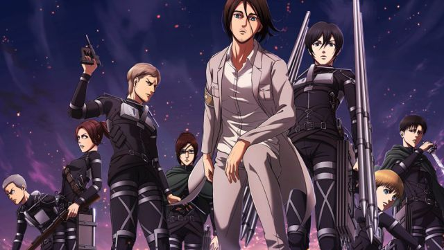
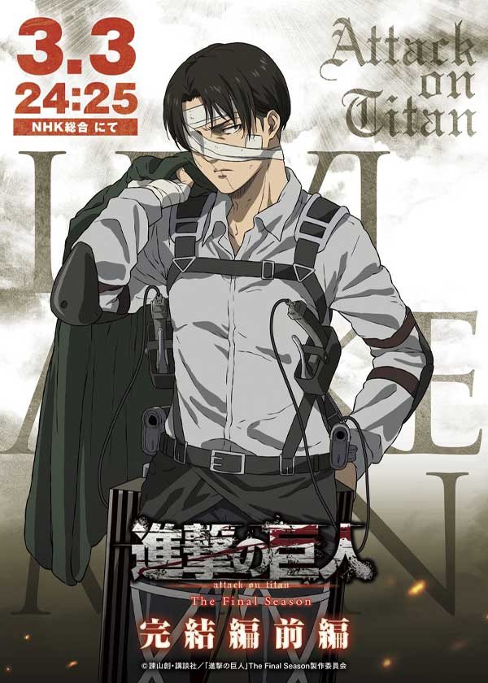

Shingeki no Kyojin (Attack on Titan)Una saga épica que narra la lucha desgarradora de la humanidad por la supervivencia, plagada de giros impactantes, revelaciones sorprendentes y una exploración profunda de la naturaleza humana en un mundo devastado por los TitanesEl final que todos deseaban XD: la mayoría anhelaba un desenlace feliz, sin embargo, el autor decidió tomar un rumbo distinto. Al analizar el anime y el manga desde el principio, se vislumbra que el autor tenía planeado un desenlace inesperado para la mayoría de los lectores. Esto sugiere que, en ocasiones, para proteger lo que más amas, se requiere hacer sacrificios.

El gran Levi mantuvo la cordura y mostró nervios de acero mientras veía morir a sus camaradas, convirtiéndose así en uno de los pocos sobrevivientes, pero a un gran costo. Ahora, la anticipación crece por un próximo spin-off titulado 'Bad Boy', que explorará la infancia de Levi. Además, se aguarda con expectación un 'After' que posiblemente responda varias incógnitas.